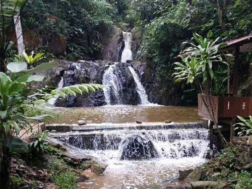

baca selengkapnya >>>>
Mengejar Berkas Matahari di AIR TERJUN SEPUTIH
Air Terjun Seputih ada di Desa Seputih, Kecamatan Mayang, Kabupaten Jember. Untuk dapat ke sana, jika memulai perjalanan dari Jember kota, kalian dapat memulai perjalanan menuju ke arah Timur ke arah Kabupaten Banyuwangi. Ketika sampai di pom bensin di Mayang, ambillah jalan ke kanan dan nantinya akan ketemu langsung dengan perempatan.....baca selengkapnya >>>>

Surga Kecil Tersembunyi di Kota Suwir-suwir
Air Terjun Maelang begitulah sebutan yang dikenal oleh masyarakat sekitar untuk wisata air terjun ini, keindahan alami sumber air tang jernih yang berpadu dengan keindahan alam hijau sekitar membuat air terjun ini terlihat menawan, cucuran air yang terjun bebas diantara tebing indah khas perbukitan ini sangatlah memanjakan dan tentunya sangat keren ....baca selengkapnya >>>

Air Terjun yang Mirip dengan Niagara ada di Jember!
Kamu ingin berkunjung ke suatu tempat bersama sahabat atau keluarga, namun masih bingung harus pergi ke mana? Coba deh kamu ke tempat wisata yang satu ini, yaitu Air Terjun Sumber Salak. Air Terjun Sumber Salak ini terletak di Desa Sumber Salak Kecamatan Ledok Ombo, Kabupaten Jember. Air terjun yang juga dikenal dengan …baca selengkapnya >>>